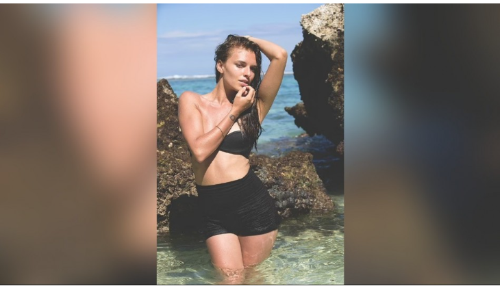
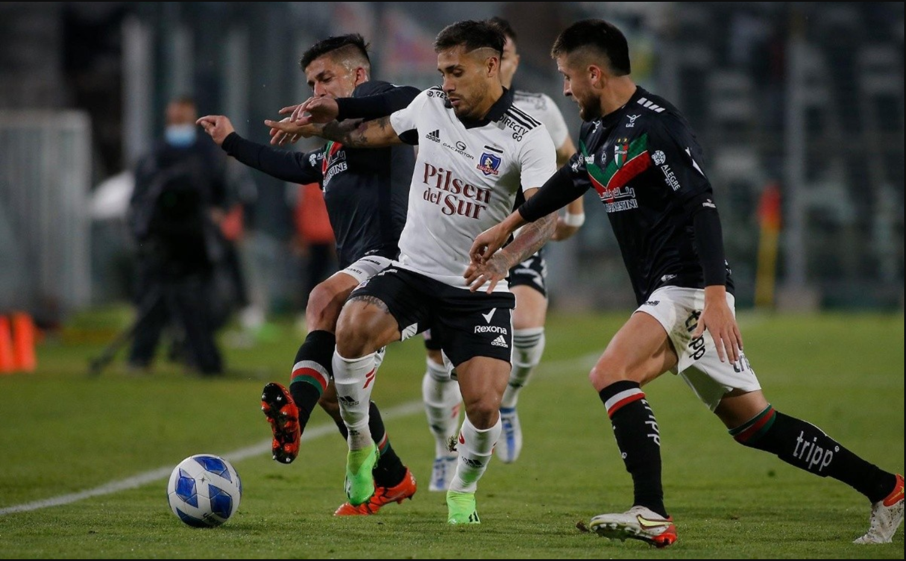

Noticias generales

Elon Musk aborda anuncio de Boric sobre la Política Nacional del Litio: “El mineral es muy común, lo que importa es la capacidad de refinación”
Categoría: Internacionales
El jueves, a través de una cadena nacional, el Jefe de Estado anunció la política nacional para este metal alcalino, el que incluye, entre varios puntos, la creación de una Empresa Nacional del Litio, la que participará de todo el ciclo productivo. Otro de los puntos anunciados fue que la exploración, explotación y agregación de valor, será en base a una colaboración público-privada...
Leer Noticia completaEl peronismo busca candidato en turbulento año de elecciones: sus dos figuras dieron paso al costado
Categoría: Internacionales
Luego que Alberto Fernández y Cristina Fernández de Kirchner anunciaran que no se presentarán a las elecciones presidenciales de Argentina, el peronismo busca con urgencia un candidato para revalidad el triunfo de 2019. El gobernador de la Provincia de Buenos Aires y el actual ministro de Economía son parte de los nombres que suenan para batallar por la Casa Rosada. La palabra más repetida durante las últimas horas entre las filas peronistas es “orden”. Una reorganización necesaria para un movimiento político que enfrenta este octubre elecciones presidenciales en Argentina y que, por el momento, no tiene ningún aspirante fuerte que suene para intentar revalidar la victoria obtenida en 2019 por el Frente de Todos...
Leer Noticia completaPelícula chilena 1976 y serie dirigida por Andrés Wood se llevan galardones en los Premios Platino
Categoría: Peliculas nacionales
a película 1976 y la serie Noticia de un secuestro triunfaron en los Premios Platino. La primera es una cinta dirigida por Manuela Martelli y ganó el galardón a "Mejor Ópera Prima de Ficción Iberoamericana". En tanto, la realización del chileno Andrés Wood se quedó con cuatro de las seis nominación que tenía.
Leer Noticia completaNoticias Princiaples
Miss Inglaterra arriesga 20 años de cárcel por tráfico de drogas en México: su madre creía que viajaba
categoría: Internacionales
Jennifer Young, la modelo inglesa que se coronó como Miss Inglaterra en 2007, arriesga hasta 20 años de cárcel en México tras ser acusada de tráfico de drogas. La modelo lleva alrededor de nueve meses en prisión, hecho que mantuvo en secreto hasta que su madre dio con su paradero en marzo de este año.
La mujer de 33 años se estaba desempeñando como guía turística, por lo que en sus últimos años se había dedicado a viajar por el mundo, siendo México una de sus últimas paradas. Sin embargo, en agosto del 2022, Young fue arrestada luego de que, según el medio Infobae, se realizara una inspección a su equipaje en el aeropuerto de Cancún.
El resultado de dicha investigación dio con que el equipaje de Young trataba de una maleta con doble fondo, donde llevaba más de 13 kilos de droga escondida en paquetes y botellas.
Pese a que Young fue inmediatamente arrestada por presunto tráfico de drogas, la modelo quiso mantener oculta su difícil situación a su familia, con quien se contacta constantemente, asegurando que estaba viajando por el país.
Pero la verdad llegó a la luz en marzo, cuando la madre de Jennifer, Angela, no recibió una llamada de su hija por su cumpleaños.
“Yo sigo en shock. Sabía que Jenny estaba en México, pero pensé que estaba de viaje. Acabo de enterarme de que Jenny está en prisión”, confesó desconsolada la mujer a Daily Mail. “Mi cumpleaños es en marzo y, no importaba en qué parte del mundo estuviera, Jenny siempre me llama. Pero esta vez no, por lo que me preocupé”, narró.
En búsqueda por saber su paradero, Angela se puso en contacto con una amiga de Jennifer, quien, tras muchos mensajes, le confesó que su amiga estaba en la cárcel. “Así me enteré de toda la historia. Que ella llevaba meses en la cárcel de Cancún, la que estaba terriblemente sobre poblada. No sé cuántas personas había en su celda, pero fue terrible”, dijo.
De acuerdo a su madre, Young fue trasladada a otra prisión en las afueras de Ciudad de México, donde todavía espera su juicio. “Podría recibir una sentencia de 20 años. Estoy tan preocupada”, se lamentó.
La mujer aseguró también que su hija recibió visitas del cónsul británico en México, aunque continúa a la espera de un abogado para poder discutir su juicio.
“Está bien ahora, que tiene una celda para ella sola. Es mucho mejor que el otro lugar. Además, los presos pueden recibir visitas de familiares. Los familiares traen comida y otras cosas”, comentó Angela, lamentando que su hija no le hubiera hablado de su situación.
“Ella me había llamado antes, pero nunca me dijo que tenía problemas. Me llamó desde la cárcel, por eso eran solo cinco minutos. No me ha contado de lo que habia pasado"
Con un Monumental sin hinchas: Colo Colo recibe a Palestino con el deber de ganar en el plano local
categoría: Deportes
El domingo 23 de abril se jugó el partido entre Colo Colo y Palestino en el Estadio Monumental, en la undécima fecha del torneo chileno. Este fue el primer partido del 'Cacique' a puertas cerradas después de ser castigado por los incidentes en el Superclásico contra Universidad de Chile. Colo Colo buscaba obtener los tres puntos para escalar en la clasificación y quedarse a cuatro unidades del líder Huachipato. Por ahora, el equipo de Gustavo Quinteros se encuentra en el séptimo lugar con 15 puntos.
En el partido anterior, Colo Colo empató sin goles ante Universidad Católica en el Santa Laura. El equipo local tuvo las bajas confirmadas de Leo Gil y Matías de los Santos. Por otro lado, Palestino necesitaba sumar de a tres para recuperar la confianza después de haber caído goleado por Cobresal en La Cisterna. Ambos equipos llegaron con la moral alta después de celebrar victorias en el plano internacional frente a rivales venezolanos.
El partido terminó empatado sin goles. Colo Colo formó con Brayan Cortés; Maximiliano Falcón, Ramiro González, Daniel Gutiérrez; Jeyson Rojas, César Fuentes, Esteban Pavez, Agustín Bouzat; Marcos Bolados y Damián Pizarro. Palestino saltó al campo con César Rigamonti; Benjamín Rojas, Fernando Meza, Cristián Suárez; Bryan Carrasco, Ariel Martínez, Agustín Farías, Fernando Cornejo, Jonathan Benítez; Misael Dávila y Maximiliano Salas.
𝐂𝐈𝐓𝐀𝐂𝐈𝐎́𝐍 | Junto a @CoolbetChile te dejamos la convocatoria de Gustavo Quinteros para enfrentar a Palestino este domingo. #VamosColoColo | #VamosPorTodo pic.twitter.com/niwNUeBVw3
— Colo-Colo (@ColoColo) April 22, 2023